01422111 · CHAPTER 02
อ.ดร. กิตติพงศ์ ทรัพย์วัฒนาชัย
Department of Digital Science and Technology · 2026
OVERVIEW
พื้นฐาน + ความน่าจะเป็น
การอนุมาน + การประยุกต์
CONTENTS
SECTION 2.0
ข้อมูลกระจุกอยู่ตรงไหน? ค่ากลาง เช่น ค่าเฉลี่ย มัธยฐาน ฐานนิยม
ข้อมูลกระจายแค่ไหน? การกระจาย เช่น พิสัย ความแปรปรวน ส่วนเบี่ยงเบนมาตรฐาน
ข้อมูลมีรูปร่างอย่างไร? การแจกแจง เช่น สมมาตร เบ้ซ้าย เบ้ขวา
มีค่าแปลกปลอมหรือไม่? ค่าผิดปกติ (Outliers)
Plots
Numeric Summary
SECTION 2.1
Quantitative Variable
Qualitative Variable
ความถี่ (Frequency) คือจำนวนข้อมูลที่สังเกตได้ในแต่ละหมวดหมู่
ความถี่สัมพัทธ์ (Relative Frequency) คือสัดส่วนของข้อมูลในแต่ละหมวดหมู่
ความถี่สัมพัทธ์ร้อยละ คำนวณจาก
| คณะ | ความถี่ | % |
|---|---|---|
| Arts | 160 | 11.9 |
| Engineering | 246 | 18.3 |
| Environment | 125 | 9.3 |
| Health | 199 | 14.8 |
| Math | 376 | 27.9 |
| Science | 239 | 17.8 |
| รวม | 1345 | 100 |
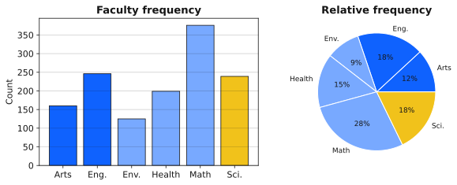
Stem-and-leaf Plot ใช้กับตัวอย่างขนาดเล็ก
ตัวอย่าง: 3 | 5 หมายถึง $350$
3 | 5 4 | 5 | 4 5 9 6 | 8 7 | 0 1 2 3 3 6 8 | 3 5 6 9 9 | 1 1 3 4 4 6 10 | 2 4 11 | 2
Histogram แสดงการแจกแจงของตัวแปรเชิงปริมาณ
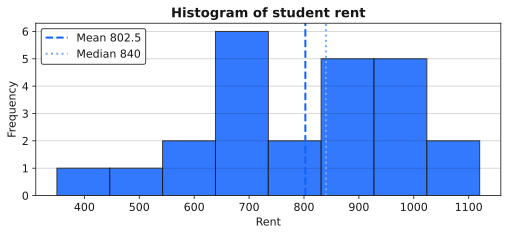
จำนวนช่วง หรือ bins มีผลต่อรูปกราฟ
SECTION 2.2
ค่าเฉลี่ยเลขคณิต (Arithmetic Mean) คือค่าที่ได้จากการนำข้อมูลทั้งหมดมารวมกัน แล้วหารด้วยจำนวนข้อมูลทั้งหมด
ค่าเฉลี่ยของประชากรใช้สัญลักษณ์ $\mu$
ค่าเฉลี่ยของตัวอย่างใช้สัญลักษณ์ $\bar{X}$
890, 1120, 590, 830, 910, 940, 550, 850, 930, 1040, 860, 720, 1020, 540, 680, 700, 760, 730, 730, 910, 960, 350, 940, 710
รวมข้อมูล $n=24$
หารด้วยจำนวนข้อมูล
ค่าเฉลี่ยนี้ใช้ซ้ำในตัวอย่าง variance (2.8) และเปรียบเทียบกับมัธยฐาน / ฐานนิยม
สำหรับข้อมูลตัวอย่าง
ตัวอย่างคะแนน $6, 8, 7, 9, 10$
ค่าเบี่ยงเบนจากค่าเฉลี่ยคือ
ผลรวม $= -2+0-1+1+2 = 0$
ค่าเฉลี่ยไม่ทนทานต่อค่าที่สูงหรือต่ำผิดปกติ
ตัวอย่างรายได้: $25{,}000,\ 27{,}000,\ 26{,}000,\ 28{,}000,\ 500{,}000$
แต่ถ้าตัดผู้บริหารที่มีรายได้ $500{,}000$ ออก ค่าเฉลี่ยของ $4$ คนแรกคือ
ค่าเฉลี่ยเปรียบเหมือน จุดศูนย์ถ่วง ของข้อมูล
ตัวอย่างข้อมูล $4, 4, 6, 8, 8$
ถ้าวางข้อมูลบนแกนตัวเลข จุด $6$ คือจุดที่ทำให้ข้อมูลสมดุล
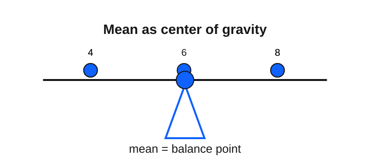
มัธยฐาน (Median) คือจุดที่แบ่งข้อมูลที่เรียงลำดับแล้วออกเป็นสองส่วนเท่ากัน
ขั้นตอนหา:
$n=24$ เป็นเลขคู่ ใช้ตำแหน่ง $\frac{n}{2}=12$ และ $\frac{n}{2}+1=13$
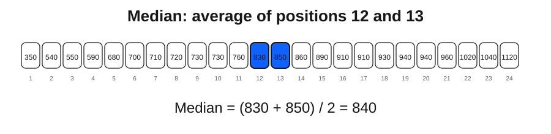
ข้อมูลเรียงแล้ว: ตำแหน่งที่ 12 คือ 830 บาท · ตำแหน่งที่ 13 คือ 850 บาท
เปรียบเทียบ: $\bar{X}=802.5$ บาท แต่มัธยฐาน $=840$ บาท — ค่าเฉลี่ยถูกดึงลงโดยค่าต่ำ (เช่น 350) มัธยฐานทนต่อค่าผิดปกติ
ฐานนิยม (Mode) คือค่าที่พบมากที่สุดในข้อมูล
ค่าเช่า $24$ คน — ความถี่สูงสุด $2$ ที่ สามค่าพร้อมกัน:
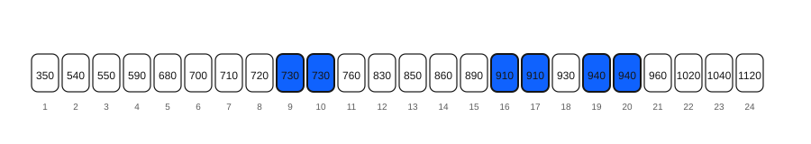
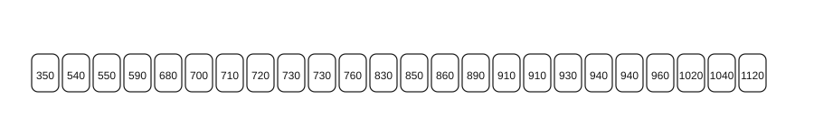
| ค่ากลาง | ค่า | หมายเหตุสั้น ๆ |
|---|---|---|
| Mean $\bar{X}$ | 802.5 บาท | ใช้ทุกค่า ไวต่อค่าต่ำสุด 350 |
| Median | 840 บาท | กลางชุดเรียง ทนต่อ outlier |
| Mode | 730, 910, 940 | หลายฐานนิยม (multimodal) |
เมื่อ $\bar{X} < \text{Median}$ มักสะท้อนข้อมูลเบ้ซ้าย (มีหางค่าต่ำ)
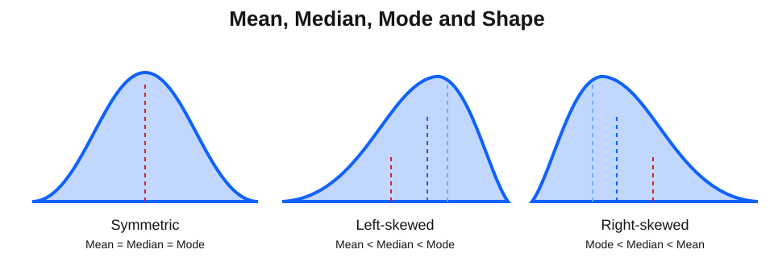
ค่าเฉลี่ยถูกดึงไปทางหางของการแจกแจง เพราะค่าสุดโต่งมีผลต่อค่าเฉลี่ยมากกว่ามัธยฐาน
SECTION 2.3
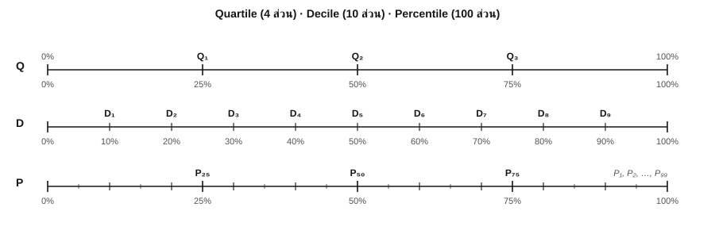
แบ่งข้อมูลเรียงแล้วเป็น $4$ ส่วน
แบ่งข้อมูลเรียงแล้วเป็น $10$ ส่วน
แบ่งข้อมูลเรียงแล้วเป็น $100$ ส่วน
$n$ = จำนวนข้อมูลทั้งหมด (เรียงจากน้อยไปมากแล้ว), $k$ = ลำดับที่ต้องการหา
| ชนิด | สูตรตำแหน่ง |
|---|---|
| ควอไทล์ที่ $k$ | $\dfrac{k n}{4}$ |
| เดไซล์ที่ $k$ | $\dfrac{k n}{10}$ |
| เปอร์เซ็นไทล์ที่ $k$ | $\dfrac{k n}{100}$ |
ถ้าตำแหน่งไม่เป็นจำนวนเต็ม ให้ปัดขึ้น
ถ้าตำแหน่งเป็นจำนวนเต็ม ให้เฉลี่ยค่าที่ตำแหน่งนั้นกับตำแหน่งถัดไป
ใช้ตำแหน่ง $\dfrac{k n}{4}$ · ถ้าได้จำนวนเต็ม ให้เฉลี่ยค่าที่ตำแหน่งนั้นกับถัดไป
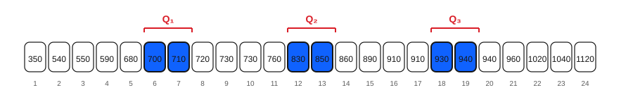
ประกอบด้วย
คือระยะทางที่ข้อมูลกลาง $50\%$ ครอบคลุม
ใช้บอกการกระจายแบบทนทานต่อค่าผิดปกติ
Box Plot สร้างจากสรุปห้าค่า
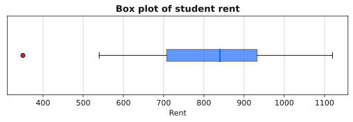
จากสรุปห้าค่า: $Q_1=705$, $Q_3=935$
ข้อมูลจากการคำนวณ (p.35):
$Q_1 = 705$, $\qquad Q_3 = 935$, $\qquad \text{LL} = 360$, $\qquad \text{UL} = 1280$
ขอบเขตที่ยอมรับได้โดยประมาณ: $360 \leq X \leq 1280$
ค่าต่ำสุด $\min = 350 < \text{LL} = 360$ → 350 เป็นค่าผิดปกติ (outlier)
ค่าสูงสุด $1120 < 1280$ จึงไม่ถือเป็น outlier ด้านบน
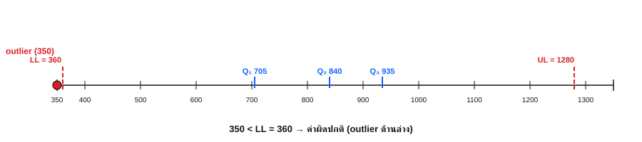
SECTION 2.4
พิสัย (Range) คือระยะทางระหว่างค่ามากที่สุดและค่าน้อยที่สุด
ข้อดีคือคำนวณง่าย
ข้อจำกัดคือใช้เฉพาะค่าสุดโต่งสองค่า จึงไม่ทนทานต่อค่าผิดปกติ
ค่าเฉลี่ยของกำลังสองของค่าเบี่ยงเบนจากค่าเฉลี่ย
SD มีหน่วยเดียวกับข้อมูล จึงตีความง่ายกว่า variance
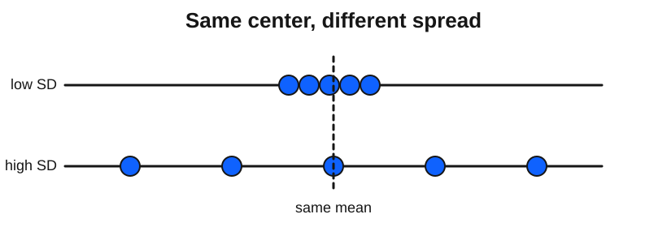
สำหรับตัวอย่าง ใช้ $n-1$ เป็นตัวหาร (ไม่ใช่ $n$)
การใช้ $n-1$ เรียกว่า Bessel's Correction
เมื่อใช้ $\bar{X}$ แทน $\mu$ ค่า $\sum(X_i-\bar{X})^2$ มักเล็กกว่าความจริง การหารด้วย $n-1$ ช่วยให้ $S^2$ เป็นตัวประมาณที่ไม่เอนเอียง (unbiased) ของ $\sigma^2$
ข้อมูลคะแนน 5 คน: 70, 75, 80, 85, 90
1. คำนวณค่าเฉลี่ย
ถ้าโจทย์บอกว่าเป็นตัวอย่าง
ขั้นนี้ยังได้ $\bar{X}=80$ เหมือนเดิม และในขั้นถัดไปจะใช้ผลรวม เดิมนี้ไปหารด้วย $n-1=5-1=4$
2. ส่วนเบี่ยงเบนและกำลังสอง (ใช้ $\bar{X}=80$)
| $X_i$ | $X_i - \bar{X}$ | $(X_i - \bar{X})^2$ |
|---|---|---|
| 70 | −10 | 100 |
| 75 | −5 | 25 |
| 80 | 0 | 0 |
| 85 | 5 | 25 |
| 90 | 10 | 100 |
| ผลรวม | 250 | |
ซ้าย: กรณีประชากร (หารด้วย $N$)
ถ้าคะแนนทั้ง 5 คนคือประชากรทั้งหมด จะใช้ตัวหาร $N=5$
ขวา: กรณีตัวอย่าง (หารด้วย $n-1$)
ถ้าคะแนนทั้ง 5 คนเป็นเพียงตัวอย่าง จะใช้ตัวหาร $n-1=4$
ผลรวม $\sum_{i=1}^{5}(X_i-\bar{X})^2 = 250$ และ $\bar{X}=80$
| วิธี | สูตร | ค่าที่ได้ | ใช้เมื่อ |
|---|---|---|---|
| หารด้วย $n$ | $250 \div 5$ | 50 | ประชากร (รู้ $\mu$ จริง) |
| หารด้วย $n-1$ | $250 \div 4$ | 62.5 | ตัวอย่าง (ประมาณ $\sigma^2$) |
ในสไลด์ตัวอย่างนำร่อง เราใช้ 62.5 และ $S \approx 7.91$ เพราะข้อมูลมาจากตัวอย่าง
เหมาะเมื่อมี $\sum X_i$ และ $\sum X_i^2$ จากตารางหรือเครื่องคิดเลข
ประชากรใช้ $N$ และ $\mu$ · ตัวอย่างใช้ $n-1$ และ $\bar{X}$
$n=5$, $\bar{X}=80$, $\sum X_i = 400$, $\sum X_i^2 = 32{,}250$
ได้ค่าเดียวกับการรวมคอลัมน์ $(X_i-\bar{X})^2$ ในตัวอย่างนำร่อง
890, 1120, 590, 830, 910, 940, 550, 850, 930, 1040, 860, 720, 1020, 540, 680, 700, 760, 730, 730, 910, 960, 350, 940, 710
$n = 24$
$\sum X_i = 19{,}260$
$\bar{X} = 19{,}260 \div 24 = 802.5$ บาท
$\sum X_i^2 = 16{,}212{,}400$
$n\bar{X}^2 = 24(802.5)^2 = 15{,}456{,}150$
ดังนั้น
ตีความ: ค่าเช่าโดยเฉลี่ยเบี่ยงเบนประมาณ 181 บาท จากค่าเฉลี่ย 802.5 บาท
| คุณสมบัติ | คำอธิบาย |
|---|---|
| ความแปรปรวนเป็นบวกเสมอ | $\sigma^2 \geq 0$ |
| ถ้าทุกค่าเท่ากัน | variance และ SD เท่ากับ $0$ |
| หน่วยของ variance | หน่วยเดิมยกกำลังสอง |
| หน่วยของ SD | หน่วยเดียวกับข้อมูล |
| ความทนทาน | ไม่ทนทานต่อ outliers |
สัมประสิทธิ์การกระจาย (Coefficient of Variation, C.V.) ใช้เปรียบเทียบการกระจายระหว่างชุดข้อมูลที่มีหน่วยหรือขนาดต่างกัน
C.V. ต่ำ หมายถึงข้อมูลใกล้เคียงกันมาก
C.V. สูง หมายถึงข้อมูลแตกต่างกันมาก
ค่าเฉลี่ย $165$ ซม. และ SD $10$ ซม.
ค่าเฉลี่ย $60$ กก. และ SD $5$ กก.
ดังนั้นน้ำหนักมีความแตกต่างสัมพัทธ์มากกว่า
| กรณี | ชุดข้อมูล | C.V. |
|---|---|---|
| เงินเดือน | การตลาด | 14% |
| เงินเดือน | วิศวกรรม | 7.1429% |
| อุณหภูมิ | เมือง A | 6.6667% |
| อุณหภูมิ | เมือง B | 12% |
อย่าเปรียบเทียบ SD ตรง ๆ เมื่อหน่วยหรือระดับค่าเฉลี่ยต่างกัน
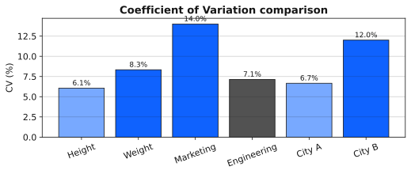
| ทนทานต่อ outliers | ไม่ทนทานต่อ outliers |
|---|---|
| Mode | Mean |
| Median | Range |
| IQR | Standard Deviation |
| Variance |
เมื่อข้อมูลมีค่าผิดปกติ ควรใช้ Median และ IQR แทน Mean และ SD
SECTION 2.5
| ชนิด | ลักษณะ |
|---|---|
| ฐานนิยมเดียว (Unimodal) | ข้อมูลรวมตัวรอบจุดยอดเดียว |
| ฐานนิยมคู่ (Bimodal) | ข้อมูลรวมตัวรอบจุดยอดสองจุด |
| หลายฐานนิยม (Multimodal) | ข้อมูลรวมตัวรอบจุดยอดหลายจุด |
จำนวนฐานนิยมช่วยบอกว่าข้อมูลมีจุดกระจุกตัวกี่แห่ง
ตัวอย่างการใช้:
| ชื่อ | สูตรหรือวิธีคิด | เหมาะกับ |
|---|---|---|
| Mean | ผลรวมหารจำนวนข้อมูล | ข้อมูลสมมาตร ไม่มี outliers |
| Median | ค่ากลางเมื่อเรียงลำดับ | ข้อมูลเบ้หรือมี outliers |
| Mode | ค่าที่ปรากฏบ่อยที่สุด | ข้อมูลเชิงคุณภาพหรือค่าที่นิยม |
| ชื่อ | สูตรตำแหน่ง | จำนวนส่วน |
|---|---|---|
| Quartile | $\dfrac{k n}{4}$ | 4 |
| Decile | $\dfrac{k n}{10}$ | 10 |
| Percentile | $\dfrac{k n}{100}$ | 100 |
ตำแหน่งข้อมูลช่วยบอกว่าค่าหนึ่งอยู่สูงหรือต่ำเมื่อเทียบกับข้อมูลทั้งหมด
| ชื่อ | สูตรสำคัญ | หน่วย |
|---|---|---|
| Range | $X_{\max}-X_{\min}$ | หน่วยเดิม |
| Variance | $S^2=\dfrac{\sum(X_i-\bar{X})^2}{n-1}$ | หน่วยเดิมยกกำลังสอง |
| SD | $S=\sqrt{S^2}$ | หน่วยเดิม |
| C.V. | $\dfrac{S}{\bar{X}}\times 100\%$ | ไม่มีหน่วย |
END OF CHAPTER 02
อ.ดร. กิตติพงศ์ ทรัพย์วัฒนาชัย
kittipong.sub@ku.th
Department of Digital Science and Technology · Kasetsart University